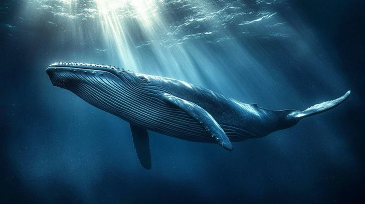
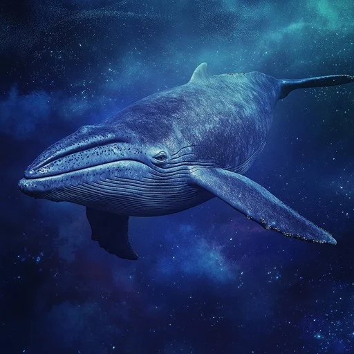
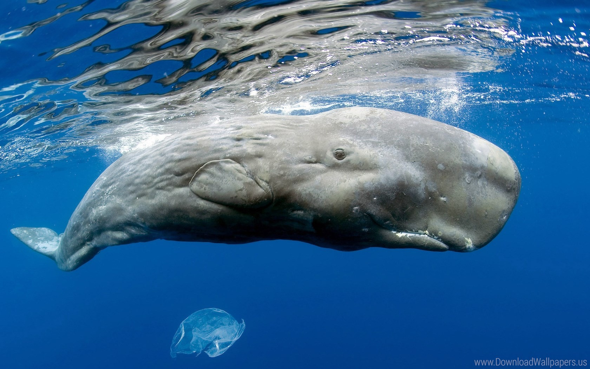

What Are Whales?
Whales are the largest animals to have ever existed on Earth. They are
fully aquatic mammals belonging to the order Cetacea, and
despite living entirely in water, they breathe air, give birth to live
young, and nurse them with milk — just like land mammals do.
What most people don't realise is that whales evolved
from land animals. Around 50 million years ago, their
ancestors were four-legged mammals that gradually moved into the sea.
The closest living relative of whales today is the
hippopotamus.

A humpback whale gliding through open ocean
Two Main Groups
-
Baleen Whales (Mysticeti) — have no teeth; instead
they filter food through comb-like baleen plates made of keratin (same
material as your fingernails). Includes Blue Whale, Humpback, Fin
Whale.
-
Toothed Whales (Odontoceti) — active predators with
teeth; also have a specialised organ called a melon in their
forehead used for echolocation. Includes Sperm Whale, Orca, Beluga.
Whales don't drink seawater. They get all the fresh water they need from
the fish and squid they eat — the metabolic breakdown of prey releases
water directly into their bloodstream.
Notable Species
🔵 Blue Whale
(Balaenoptera musculus)
The Blue Whale is the largest animal ever known to have existed — not
just today, but in the entire 4.5 billion year history of life on Earth.
It outweighs even the largest dinosaurs.
It can reach lengths of up to 30 metres and weigh as
much as 200 tonnes.
Its heart alone weighs about 180 kg — roughly the size
of a small car — and beats only 4–8 times per minute when diving.

A Blue Whale near the surface — note the mottled blue-grey skin
Quick Reference
Lifespan 80–90 years
Diet Krill only
Status Endangered
Call 188 decibels — loudest animal on Earth
A Blue Whale eats up to 4 tonnes of krill per day — but
only during summer. During winter migration, they barely eat at all and
survive entirely on stored fat reserves. A single feeding season has to
fuel almost an entire year.
🎵 Humpback Whale
(Megaptera novaeangliae)
Humpback Whales are famous for their songs — but these aren't random
sounds. Only males sing, and all males in the same ocean basin sing the
exact same song
at any given time. The song slowly evolves over months, and every whale
updates it in sync. Scientists still don't fully understand how this
collective update happens.
They are also one of very few non-human animals observed
deliberately protecting other species from orca attacks
— including seals, dolphins, and even humans in the water.
Migration Facts
-
Complete one of the longest migrations of any mammal — up to
16,000 km each way
-
Travel from polar feeding grounds to tropical breeding grounds every
year
-
Navigate with remarkable precision across open ocean, likely using
Earth's magnetic field
-
Calves are born in warm tropical waters and must immediately swim
thousands of km to cold feeding grounds
Humpbacks hunt using a technique called
bubble-net feeding — a group of whales swims in a
spiral below a school of fish, blowing bubbles to create a cylindrical
"net." The fish bunch together trying to avoid the bubbles, and the
whales lunge upward through the centre with their mouths open. It's one
of the most coordinated hunting strategies in the animal kingdom.
🦷 Sperm Whale
(Physeter macrocephalus)
The Sperm Whale is the largest toothed predator on Earth. It holds the
record for the
deepest confirmed dive of any mammal — over
2,250 metres — and can hold its breath for up to 90
minutes. At those depths, pressure is over 200 times that at the
surface. Their ribcages actually collapse inward to survive it.

The Sperm Whale's enormous square head makes up nearly a third of its
body
Biology
The massive square head contains an organ called the
spermaceti organ — filled with a waxy fluid that helps with
buoyancy control and possibly amplifies sonar clicks.
Ambergris
Sperm whales produce a rare substance called ambergris in
their intestines — formed around indigestible squid beaks. It was
historically worth more than gold and is still used in perfumery
today.
Sperm Whales have the
largest brain of any animal ever — weighing around 7–9
kg, nearly 6× the size of a human brain. They live in complex
matriarchal societies, have regional dialects in their clicks, and
appear to have distinct cultural identities between different ocean
populations.
Species Comparison
The table below compares the five most well-documented whale species
across key biological metrics.
| Species |
Type |
Max Length |
Max Weight |
Diet |
Dive Depth |
Status |
| Blue Whale |
Baleen |
30 m |
200 tonnes |
Krill |
~500 m |
Endangered |
| Humpback Whale |
Baleen |
16 m |
30 tonnes |
Fish, Krill |
~300 m |
Least Concern |
| Sperm Whale |
Toothed |
20 m |
57 tonnes |
Giant Squid |
2,250 m |
Vulnerable |
| Orca |
Toothed |
9 m |
6 tonnes |
Fish, Mammals |
~260 m |
Data Deficient |
| Fin Whale |
Baleen |
27 m |
74 tonnes |
Fish, Krill |
~470 m |
Vulnerable |
Intelligence & Social Life
Whales are among the most cognitively complex animals on Earth. Several
species possess
spindle neurons — a type of brain cell previously thought to be
unique to humans and great apes — which are associated with
self-awareness, empathy, and social cognition.
Documented Behaviours
-
Culture: Different whale populations have distinct
feeding techniques, songs, and communication styles passed down
through generations — a hallmark of culture.
-
Grief: Multiple species have been observed carrying
deceased calves for days, sometimes weeks.
-
Play: Whales engage in non-survival play behaviour —
breaching, tail-slapping, and object manipulation — particularly in
younger individuals.
-
Cooperation: Orcas and humpbacks coordinate complex
multi-individual hunts that require planning and role assignment.
-
Self-recognition: Bottlenose dolphins (toothed
whales) pass the mirror self-recognition test — one of the strongest
indicators of self-awareness.
Orcas (killer whales) are technically dolphins — the largest members of
the dolphin family
Delphinidae. Different orca populations are so genetically and
culturally distinct that scientists consider them to be separate species
in all but official classification. "Resident" orcas eat only fish;
"Transient" orcas hunt marine mammals — and the two groups never
interbreed, even in the same waters.
Conservation
Between the 1900s and 1970s, commercial whaling killed an estimated
3 million whales — pushing multiple species to the edge
of extinction. The Blue Whale population dropped from roughly 350,000
individuals to fewer than 10,000 by the time the
International Whaling Commission banned commercial whaling in 1986.
Today, recovery is happening — but slowly. Blue Whale populations are
estimated at 10,000–25,000 globally. The threats have shifted:
-
Ship strikes — container ships travel faster than
whales can react; strikes are a leading cause of death for large
whales in shipping lanes
-
Ocean noise pollution — sonar, shipping traffic, and
drilling interfere with whale communication and navigation over
thousands of kilometres
-
Entanglement — fishing gear is a major cause of
injury and slow death, especially for right whales
-
Climate change — warming oceans shift krill
distribution, disrupting feeding grounds that whales have relied on
for millennia
-
Plastic ingestion — multiple stranded whales have
been found with hundreds of kilos of plastic in their stomachs
Whales are actually a
critical tool against climate change. When a whale dies
naturally, its body sinks to the ocean floor — sequestering decades
worth of absorbed carbon permanently. A single great whale sequesters an
estimated 33 tonnes of CO₂ over its lifetime.
Researchers at the IMF have calculated that restoring whale populations
to pre-whaling levels could capture carbon equivalent to planting
1.7 trillion trees.
Learn more and support conservation efforts:
🔗
Whale Conservation — Wikipedia